Die erlernbaren Waffenfertigkeiten.
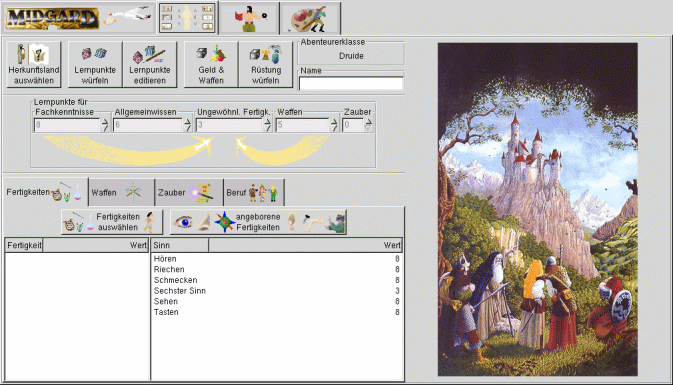
(Mit der Maus auswählen)
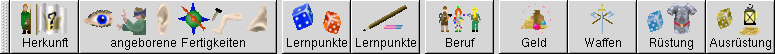
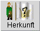
Herkunftsland wählen:
Über diesen Button wird das Herkunftsland des Abenteurers ausgewählt.
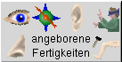
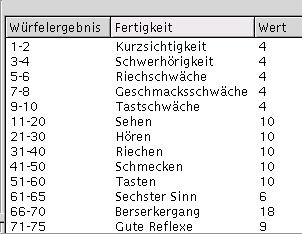
Angeborene Fertigkeiten:
Um die angeborenen Fertigkeiten zu ermitteln dient dieser Button.
Es gibt zwei Wege, auf welchen der Angeborenen Fertigkeit ermittelt werden können.
Durch einen Druck auf die linke Maustaste wird eine Fertigkeit zufällig ausgwürfelt.
Mit der rechten Maustaste öffnet sich ein Auswahlfenster (Abb.: rechts).
In dem Auswahlfenster können eine oder mehrere angeborene Fertigkeiten mit der Maus
selektiert werden.
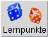
Lernpunkte würfeln:
Das Anklicken dieses Buttons hat zur Folge, dass die Lernpunkte für die verschiedenen Bereiche ausgewürfelt werden.
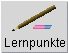
Lernpunkte Editieren:
Die bereits erwürfelten Lernpunkte können in den jeweiligen Feldern manuell editiert werden. Alternativ können die Lernpunkte von vorneherein manuell eingegeben werden.
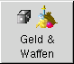
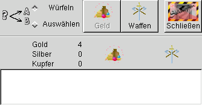
Geld und Waffen:
Hinter diesem Button verbirgt sich die Möglichkeit, Geld und Waffen für den Abenteurer auszuwürfeln oder alternativ auszuwählen.
Es öffnet sich das nebenstehende Fenster (rechts):
Hier wird zunächst bestimmt, ob Geld, bzw. Waffen ausgewählt oder ausgewürfelt werden sollen (Würfeln ist voreingestelt).
Es kann jeweils nur einmal für Geld oder Waffen gewürfelt werden. Sobald ein Button betätigt wurde, steht er nicht
mehr zur Auswahl ('Geisterschrift')
Allgemeine Fertigkeiten
Die verfügbaren Allgemeinen Fertigkeiten.
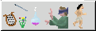
Ungewöhnliche Fertigkeiten
Auswahl de Ungewöhnlichen Fertigkeiten.
 Waffenfertigkeiten:
Waffenfertigkeiten:
Die erlernbaren Waffenfertigkeiten.
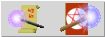
Zauber:
Die Erlernbaren Zauber.
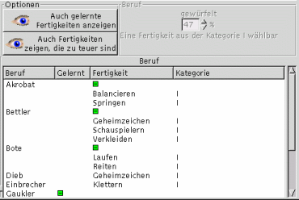
linke Maustaste:
Der Wert für den Beruf wird ausgewürfelt und es öffnet sich ein Auswahfenster, welches die verfügbaren Berufe und
die mit ihnen verbundenen Fertigkeiten auflistet.
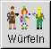
Der Button "Würfeln" hat zwei Funktionen:
Die linke Maustaste ermöglicht es, den Wert für die Berufsauswahl erneut auzuwürfeln.
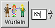
Die rechte Maustaste öffnet ein Eingabefeld:
Hier kann der Berufswert direkt eingegeben werden.
Der eigentliche Berufsfertigkeit wird durch die Selektion einer mit ihr verbundenen Fertigkeit bestimmt.